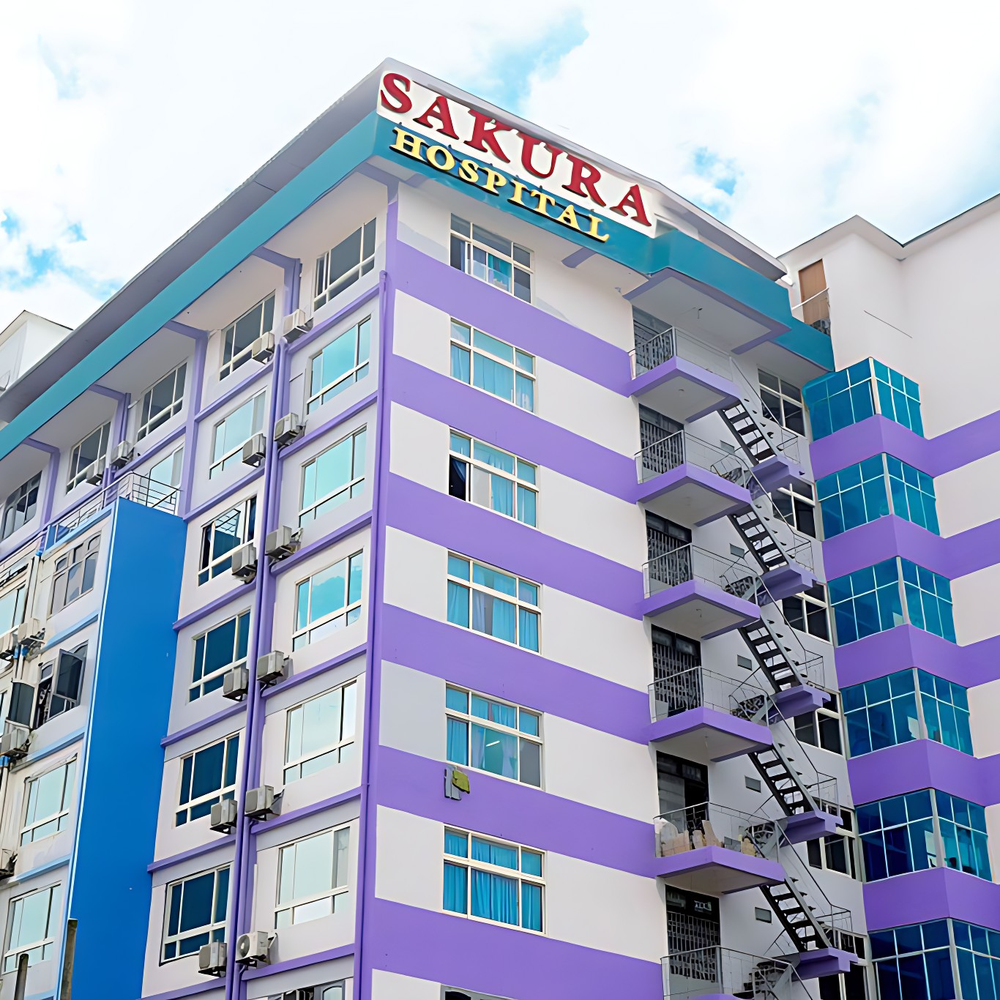

About Sakura Hospital!
Sakura Hospital is one of the well-known private hospitals in Yangon, Myanmar. Established in 1998, the hospital provides a wide range of healthcare services including emergency treatment, surgery, radiology, and specialist care. It is known for its modern medical equipment, experienced doctors, and convenient location in Sanchaung Township, making it an important healthcare center for many people in Yangon.